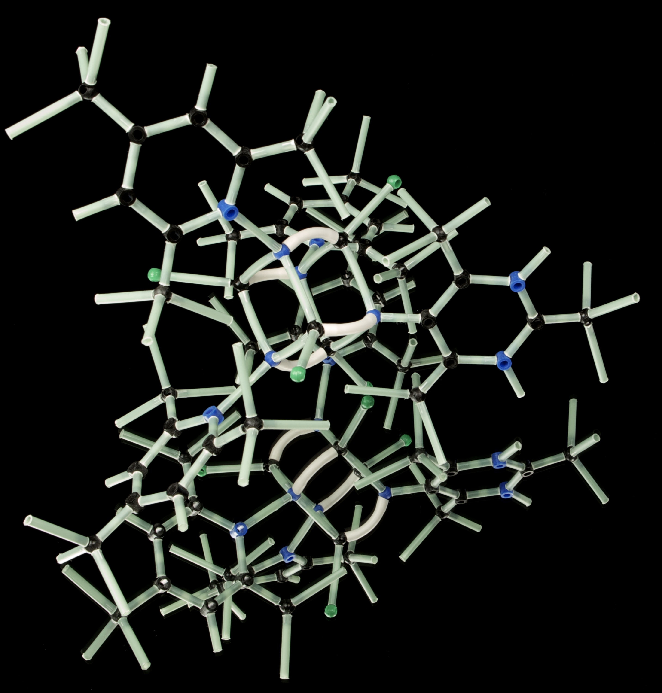

- 지식
- 영양
- 운동
근육을 어느정도까지 키울 수 있을까?
블로그에서 흔히 받는 질문 중 유독 초보자에게서 잘 받는 질문이 있습니다.
골격근이 몇 kg늘었는데 속도가 너무 느린것 같다느니, 혹은 어디까지 목표로 삼을지 등등이죠.
초보때는 마음이 급해지는게 당연하지만 가끔은 한두 달이면 몸짱이 된다고 착각하고 계신 게 아닌가
싶을 만큼 과한 분들도 있고, 반대로 너무 목표를 소심하게 잡는 분들도 있습니다.
그렇다면 [제대로 운동을 했을 때] 과연 얼마만큼 근육을 기를 수 있을지 생각해 봅시다.
사실 이 내용은 제가 십여 년 전에 비슷한 내용으로 한 번 포스팅한 바 있습니다. 그런데 지난
십여년간 내용의 이런저런 업데이트가 있어 이를 기반하여 새 포스팅을 작성하여 올립니다.
여기서 [제대로] 라는 건 유능한 트레이너라도 두거나, 꾸준히 중량과 횟수를 늘려가면서 점진적 과부하
를 주며 운동하는, 제대로 빡세게 운동하는 케이스를 말합니다. 그리고 근육을 만들만큼 충분한 열량과
단백질을 섭취할 경우 입니다.
이미 비만이거나 체지방감량을 목적으로 한다면 뒤의 내용은 전혀 해당하지 않습니다. 감량시엔 초보 때
잠시를 빼면 근육량은 지키면 다행입니다. 비만한 상태에서는 일단 살부터 빼고 봐야지 이런 문제를
따질 때가 아닙니다.
집에서 푸쉬업이나 스쿼트 50번하고 운동 끝!! 이라 여기거나, 1년이 지나도록 자극천국 불신지옥을
외치며 수행능력에 아무 발전이 없거나 체지방은 줄이고, 근육은 늘리고 를 외치며 다이어트 식단을
고집하며 근육량만 늘기를 바라는 경우도 전혀 해당하지 않습니다.

1. 내 생물학적인 한계는?
모든사람에게는 가질 수 있는 근육량의 한계가 있습니다. 선천적으로 일부 결정되지만 사실 대다수 사람들은
한계치까지 가는 길의 절반도 거두지 못하고 수명을 다하게 되죠. 그렇다면 운동+영양+주변환경 모두
최적의 조건일 때 약물 없이 어느 정도까지 몸을 키울 수 있을까요?
1>대략 퉁쳐보면 14kg??
사실 이에 관해서는 일선 트레이너들이 가장 간단하게 퉁치는 수치는 있습니다. (서구기준으로) 운동을
전혀 안 한, 비만하거나 마르지 않은 평균적인 남성은 약물을 안쓰고 운동, 영양등의 모든 조건이 최적일 때
최대 13.6kg정도의 골격근을 더 얻을 수 있다고 보죠. 여성은 여기서 50~70%정도일 것입니다.
물론 이 수치는 체격과 선천적인 조건을 깡그리 무시한, 퉁치는 수치이기 때문에 체격 조건이 평균에서
벗어나거나, 이전에 운동을 많이 했다면 당연히 다를 수 있습니다. 그냥 대충 감을 잡을 때 쓰는
수치 입니다.